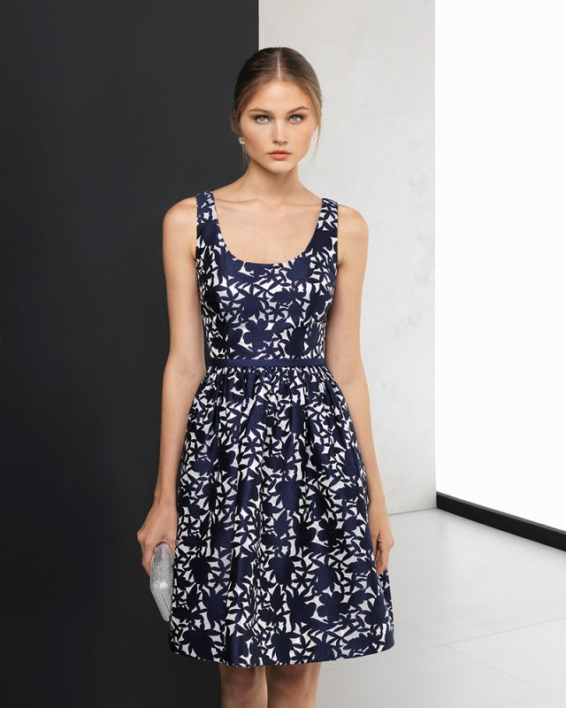
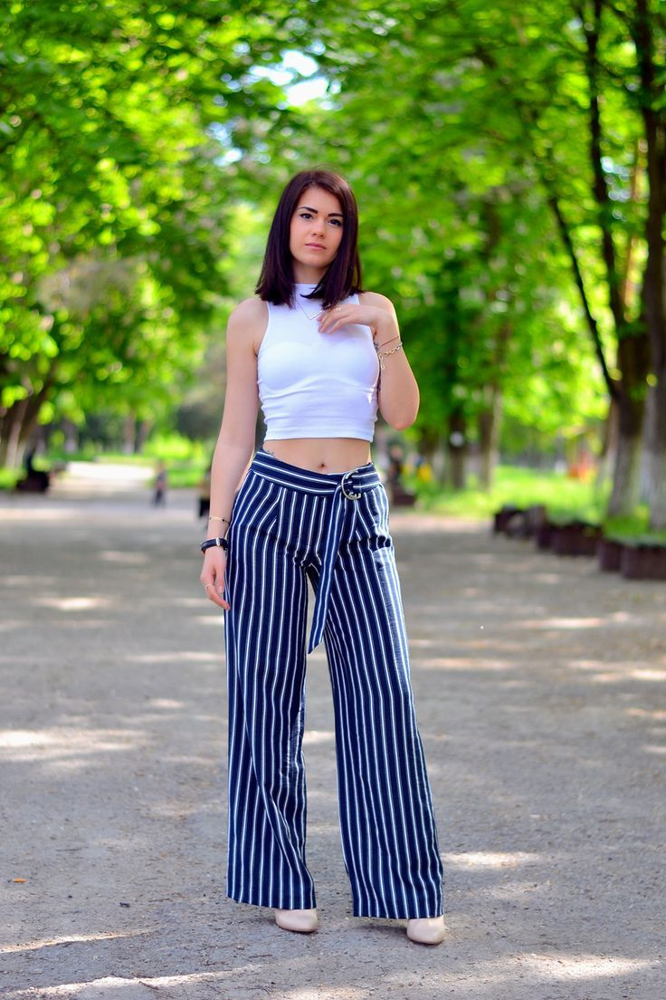

Las medidas que ocuparas para la falda son: • Contorno cadera • Contorno cintura • El largo(a tu gusto) Las medidas que ocuparas para la blusa son: • Contorno busto • Largo talle (del huesito de atrás de tu cuello hasta tu cintura) • Largo del costado • Puedes utilizar una blusa |
 |
Las medidas que ocuparas son: • Contorno cintura • El largo de tu agrado • Puedes utilizar un Pantalón |
 |